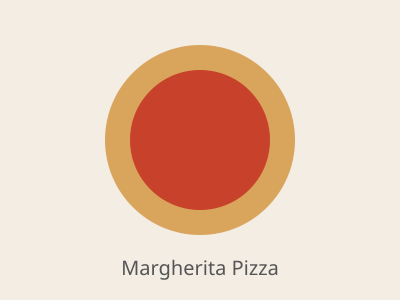

Home
Margherita Pizza

Description
Margherita is the classic Neapolitan pizza: a chewy, blistered crust topped with
bright tomato sauce, creamy mozzarella and fresh basil. Its simplicity is the point,
so quality ingredients make all the difference.
This homemade version uses a simple yeast dough and bakes in a very hot oven to get
a crisp bottom and puffy edges. It makes two 10-12 inch pizzas.
Ingredients
- 3 1/2 cups (440 g) all-purpose or bread flour
- 1 packet (2 1/4 tsp) instant yeast
- 1 1/2 tsp salt
- 1 tsp sugar
- 1 1/4 cups warm water
- 2 tbsp olive oil, plus extra for drizzling
- 1 cup crushed tomatoes
- 1 garlic clove, minced
- 8 oz fresh mozzarella, sliced or torn
- A handful of fresh basil leaves
Steps
- Mix the flour, yeast, salt and sugar in a large bowl. Add the warm water and olive oil and stir until a shaggy dough forms.
- Knead on a floured surface for 8-10 minutes until smooth and elastic.
- Place the dough in an oiled bowl, cover, and let it rise for 1 to 1 1/2 hours until doubled in size.
- Preheat your oven to its highest setting (475-500°F / 245-260°C) with a pizza stone or baking sheet inside.
- Mix the crushed tomatoes with the garlic and a pinch of salt to make the sauce.
- Divide the dough in two and stretch each piece into a round on a floured surface.
- Spread sauce over each round, leaving a border for the crust, then top with mozzarella.
- Slide the pizza onto the hot stone or sheet and bake for 8-12 minutes until the crust is golden and the cheese is bubbling.
- Top with fresh basil, drizzle with olive oil, slice and serve hot.